QFieldSync¶
Das QFieldSync-Plugin für QGIS hilft bei der Vorbereitung und Packung von QGIS-Projekten für QField.
QFieldSync unterstützt Ihre Projektvorbereitung durch die Automatisierung der folgenden Aktionen:
- Erforderliche Schritte für die Einrichtung eines Projekts (z. B.
portables_Projekt) - Erstellen von Basiskarten aus einem einzelnen Raster-Layer oder aus einem definierten Stil in einem Karten-Thema.
- Konfigurieren der Offline-Bearbeitungsfunktion und des Synchronisierens von Änderungen.
Arbeitsablauf¶
Um einen kurzen Überblick über den Prozess zu erhalten, ist hier eine Liste der typischen Schritte:
- Erstelle ein QField Paket. Das ist eine Arbeitskopie eines Projektes in einem separaten Ordner.
- Das QField Paket auf das Zielgerät kopieren.
- Daten im Feld sammeln
- Zurückkopieren der Bearbeiteten Daten auf den Desktopcomputer.
- Synchronisation der modifizierten Daten mit der Datenbank oder Dateien.
Installation¶
Öffne die Erweiterungsverwaltung in QGIS und suche nach qfield sync. Wähle das Plugin aus der Liste aus und klicke auf Erweiterung installieren.
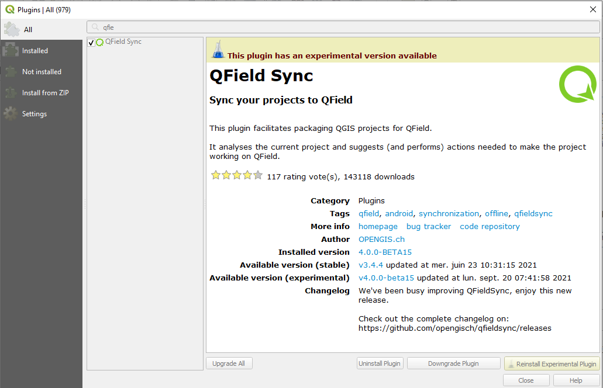
{kind=link}
Konfiguration¶
Die Projektkonfiguration wird in einer eigenen Projektdatei mit der Erweiterung .qgs gespeichert. Auf diese Weise ist es möglich, ein Projekt einmal vorzukonfigurieren und es dann wiederholt zu verwenden.
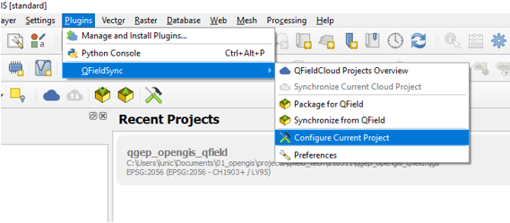
{kind=link}
Layerkonfiguration¶
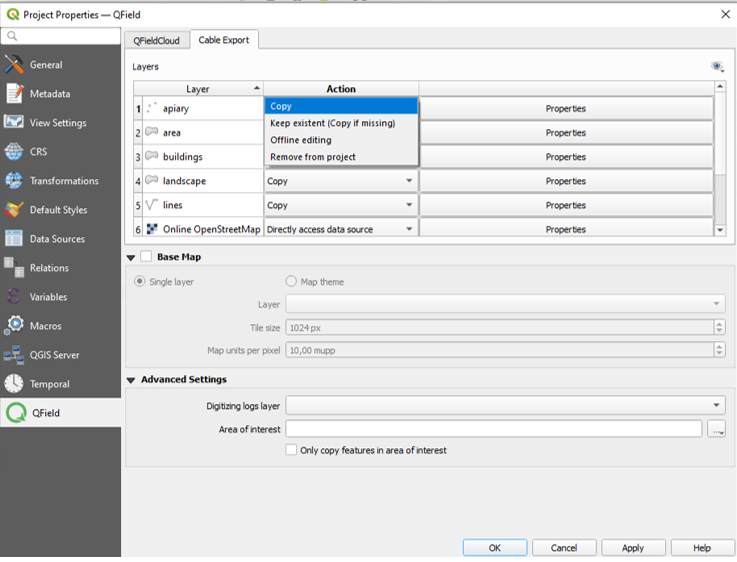
{kind=link}
In den Einstellungen zur Projektkonfiguration kann für jede Ebene individuell eine Aktion definiert werden. Je nach Ebenentyp stehen verschiedene Arten von Aktionen zur Verfügung.
- Kopieren
-
Der Layer wird in den Paketordner kopiert. Dies ist nur für dateibasierte Layer möglich.
- Keine Aktion
-
Die Layer-Quelle bleibt unberührt. Dies ist nur verfügbar für nicht dateibasierte Layer wie WMS, WFS, Postgis...
- Offline Bearbeiten
-
Eine Arbeitskopie ders Layers wird in den Paketordner kopiert. Jede Änderung, die während der Arbeit an dem gepackten Projekt vorgenommen wird, wird in einem Änderungsprotokoll aufgezeichnet. Wenn Sie die Änderungen später zurücksynchronisieren, wird dieses Protokoll wiedergegeben und alle Änderungen werden angewendet auch auf die Haupt-Datenbank. Es gibt keine Konfliktregelung.
- Entfernen
-
Die Ebene wird aus der Arbeitskopie entfernt. Dies ist nützlich, wenn ein Layer in der Basiskarte verwendet wird und im gepackten Projekt nicht mehr verfügbar ist.
- Eigenschaften
-
Es gibt in den Eigenschaften einige zusätzliche Optionen zur Feinabstimmung Ihres QField-Projekts
-
Geometrien sperren: erlaubt keine Änderung von Geometrien, sonder nur die Änderung von Attributen in diesem Layer.
-
Legen Sie die Standardbenennung für Anhänge fest, siehe Konfigurierbarer Bildpfad
-
Legt die maximale Anzahl der im Beziehungseditor-Widget angezeigten Elemente fest
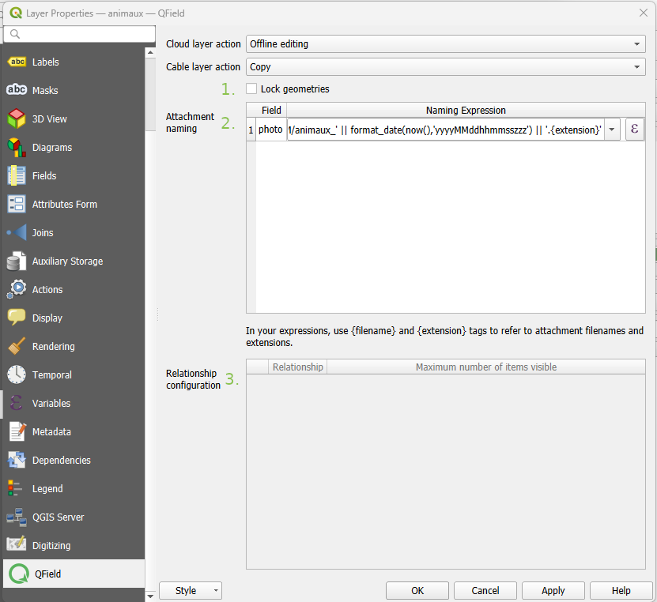
{kind=link}
Konfigurieren der maximalen Sichtbarkeit von Elementen für QField¶
Um die maximale Anzahl der sichtbaren Elemente in einer Beziehung innerhalb von QField anzupassen, gehen Sie wie folgt vor:
- Zugriff auf den Dialog Layer-Eigenschaften:
-
Öffnen Sie den Layer-Eigenschaften-Dialog in QGIS, in dem der Beziehungseditor angezeigt wird.
-
Navigieren Sie zur Registerkarte QField:
-
Suchen Sie die Registerkarte QField, die sich in der Regel am unteren Rand des Dialogfelds für die Layer-Eigenschaften befindet.
-
Beziehungskonfiguration modifizieren:
-
In der "Beziehungskonfiguration" gehen Sie zu dem Abschnitt, der der Beziehung entspricht, die Sie ändern möchten.
-
Sichtbarkeitsgrenze anpassen:
- Suchen Sie innerhalb der Zeile für die gewünschte Beziehung die "Maximale Anzahl der sichtbaren Elemente" Spalte.
- Löschen Sie den vorhandenen numerischen Wert, um die Sichtbarkeit auf "unbegrenzt" zu setzen; das Feld wird von einer Zahl (Standardwert 4) in "unbegrenzt" geändert.
- "Anwenden" antippen, um die Änderungen in den Layer-Eigenschaften zu speichern.
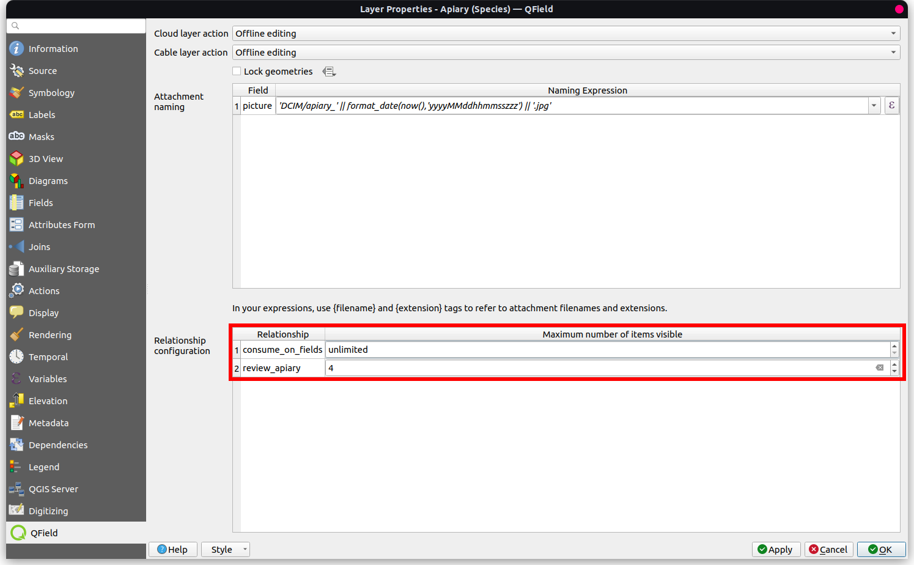
{kind=link}
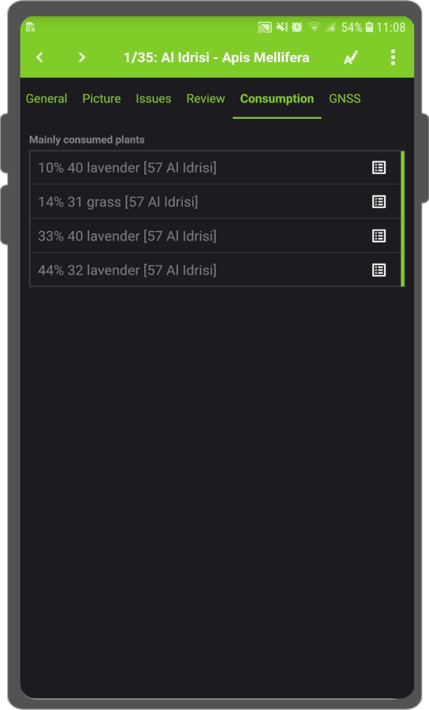
{kind=link}
Hintergrundkartenkonfiguration¶
Eine Basiskarte ist eine Rasterebene, die als unterste Ebene zu der gepackten Projektdatei hinzugefügt wird.
Wenn die Option Basiskarte aktiviert ist, wird immer eine Basiskarte dargestellt, wenn das Projekt gepackt wird. Die Area of Interest, d. h. der Bereich, der da rgestelltwird, wird zum Zeitpunkt der Paketierung ausgewählt.
Es gibt zwei mögliche Quellen für eine Basiskarte:
- Layer
-
Ein Raster-Layer. Dies ist nützlich, um eine Offline-Kopie eines Online-Layers wie eines WMS oder eine Arbeitskopie eines nicht unterstützten Formats wie eines ECW- oder MrSID-Layers zu erstellen.
- Kartenthema
-
Ein Kartenthema. Dies ist nützlich, um eine Basiskarte zu erstellen, die auf einer Kombination aus mehreren Layern mit eigenem Stil basiert. Diese Layer können dann aus dem Arbeitspaket entfernt werden und müssen nicht auf dem Gerät dargestellt werden. Dies kann Speicherplatz und Batterie auf dem Gerät sparen.
Die Kachelgröße definiert die räumliche Auflösung. Sie bestimmt die Anzahl der Karteneinheiten pro Pixel. Wenn das Karten-KBS Meter als Einheit hat und die Kachelgröße auf 1 eingestellt ist, hat jedes Rasterpixel eine räumliche Ausdehnung von 1x1 m, wenn sie auf 1000 eingestellt ist, hat jedes Rasterpixel eine räumliche Ausdehnung von 1 Quadratkilometer.
You can package a raster layer into an MBTiles file with multiple zoom levels for offline use.
- Tiles min zoom level: Defines the minimum zoom level for the raster tiles. A lower value increases the spatial coverage but the spatial resolution is limited. (Default: 14)
- Tiles max zoom level: Defines the maximum zoom level for the raster tiles. A higher value increases detail but may require more storage space, as well as increase the duration of the offline export. (Default: 14)
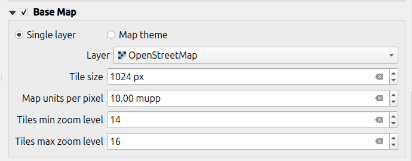
{kind=link}
Anmerkung
Die Erzeugung von Basiskarten ist in QFieldCloud deaktiviert. Sie können Ihre Basiskarten immer noch manuell hinzufügen, indem Sie "XYZ Kacheln(MBTiles) erstellen" or "Karte zu Raster konvertieren" auswählen.
Konfiguration von Offline Bearbeiten¶
Wenn die Option Nur Features in einer Area of Interest synchronisieren aktiviert ist, werden nur die Features in die Arbeitskopie der Offline-Bearbeitung kopiert, die sich zum Verpackungszeitpunkt innerhalb des Kartenbereichs befinden.
Paket für QField¶
Um Ihr Projekt zu paketieren, klicken Sie auf Plugins > QFieldSync > Paket für QField. Sobald das Projekt konfiguriert ist, packen Sie es in einen Ordner. Dieser Ordner enthält sowohl die QGIS-Projektdatei (.qgs) als auch die zugehörigen Daten.
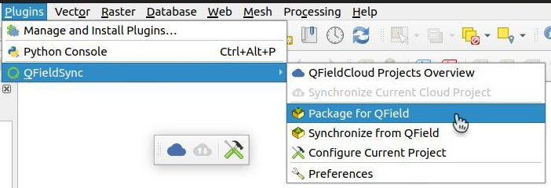
{kind=link}
Auch wenn QFieldSync die Paketieroptionen nicht standardmäßig in der Symbolleiste anzeigt, können Sie dennoch über Plugins > QFieldSync > Einstellungen darauf zugreifen.
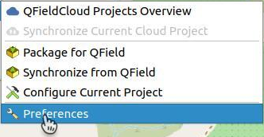
{kind=link}
Aktivieren Sie einfach das Kontrollkästchen mit der Bezeichnung "Zeigen Sie die Paketieroptionen in der Symbolleiste an."
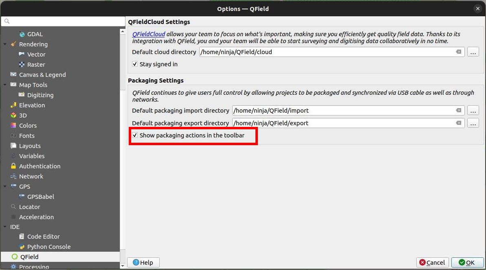
{kind=link}
{kind=link}
{kind=link}
Kopieren Sie den Ordner auf Ihr Gerät. Öffnen Sie QField, öffnen Sie das Projekt und beginnen Sie mit der Datenerfassung.
Stellen Sie auch sicher, dass Sie das QGIS-Projekt mit "Speichern unter" in QGIS speichern, da Sie es später wieder öffnen müssen, wenn Sie die Änderungen synchronisieren wollen.
Während der Paketierung Ihres Projekts können Sie auswählen, welche Unterverzeichnisse kopiert werden sollen, indem Sie die Verzeichnisse unter ''Erweitert'' -> ''Zu kopierende Verzeichnisse' auswählen.
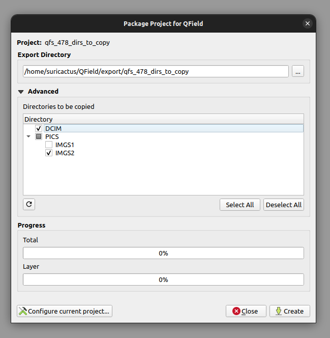
{kind=link}
Wie man von/zu einem iOS-Gerät ohne QFieldCloud synchronisiert¶
Verwenden Sie die Funktion "Dateifreigabe" von iTunes, um in den QField-Stammordner zu importieren.
- Öffnen Sie die iTunes-App und klicken Sie auf die Schaltfläche "iPhone" oben links im iTunes-Fenster.
- Klicken Sie in der linken Seitenleiste auf die Option Dateifreigabe.
- Wählen Sie die Anwendung QField und klicken Sie auf Daten hinzufügen. Dadurch wird der Dateibrowser geöffnet.
- Datei auswählen.
Synchronisieren von QField¶
Wenn Sie die aufgenommenen Daten synchronisieren möchten, öffnen Sie das Projekt erneut in QGIS (das Projekt, das Sie mit einem normalen "Speichern unter" gespeichert haben).
Kopieren Sie den Projektordner von Ihrem Gerät auf Ihren Computer und verwenden Sie das Menü Synchronisieren von QField, um Ihre Änderungen vom portablen Projekt mit dem Hauptprojekt zu synchronisieren.
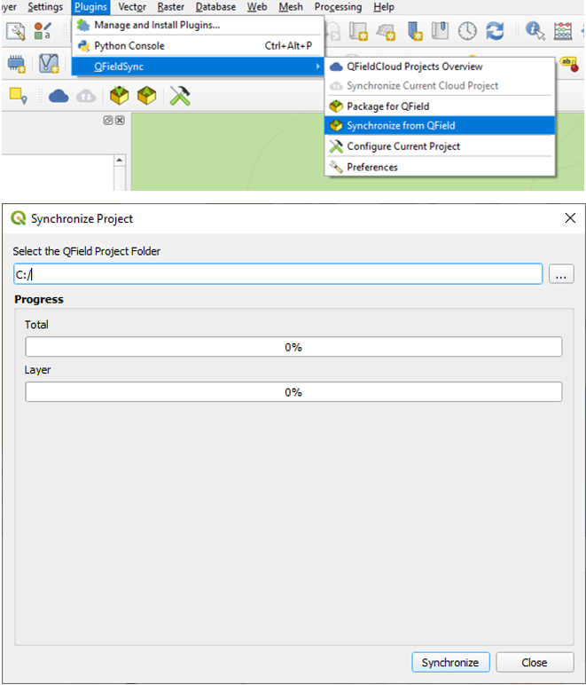
{kind=link}
Achten Sie darauf, dass Sie Ihre Daten nur einmal zurücksynchronisieren. Das heißt, wenn Sie erneut losziehen, um weitere Daten zu sammeln, sollten Sie vorher ein neues QField-Paket erstellen, um spätere Synchronisierungsprobleme (wie z. B. Duplikate) zu vermeiden.